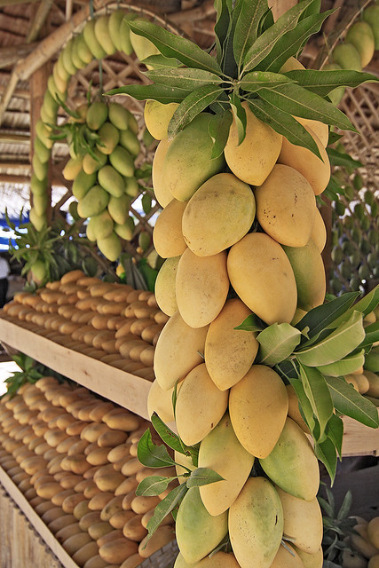
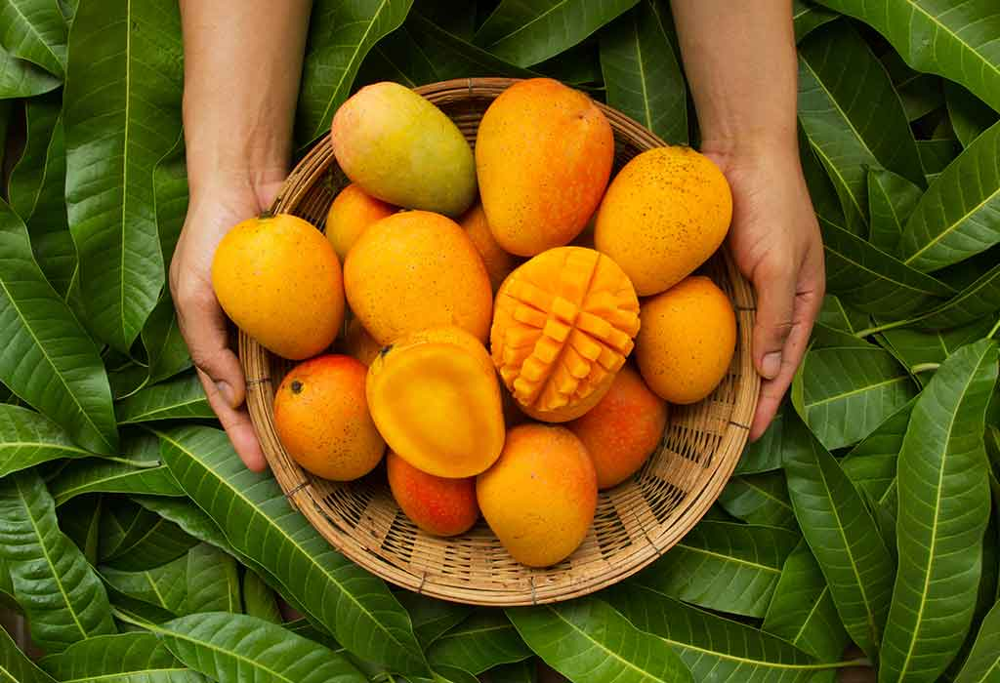
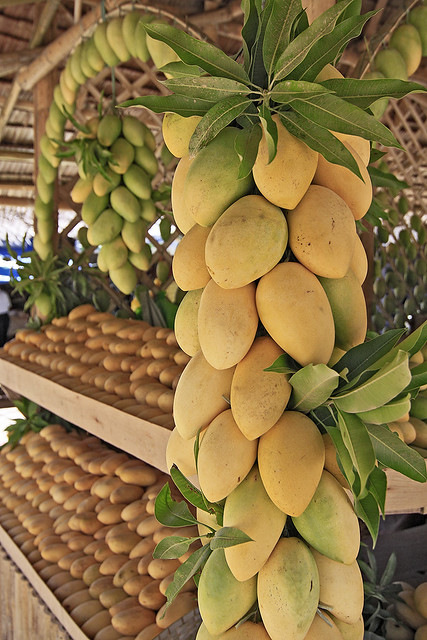
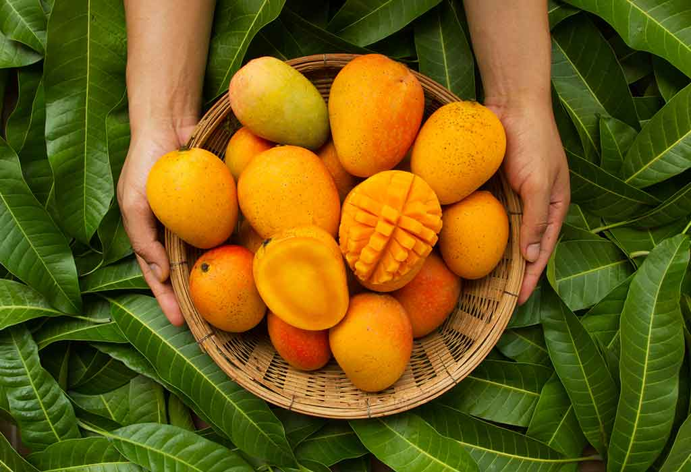

The Guimaras Manggahan Festival is an annual celebration held in the province of Guimaras, Philippines, to honor its world-renowned mangoes. Known as the "Mango Capital of the Philippines," Guimaras takes pride in producing some of the sweetest and most flavorful mangoes in the world. The festival is a vibrant showcase of the province's rich agricultural heritage, cultural traditions, and community spirit.
History of the Festival
The Manggahan Festival was first celebrated in 1993 to promote Guimaras mangoes and boost the local economy. Over the years, it has grown into a major event, attracting tourists and mango enthusiasts from around the globe. The festival also commemorates the province's independence from Iloilo, which was officially recognized on May 22, 1992.
Festival Events
The Manggahan Festival features a variety of exciting events and activities, including:
- Mango Eat-All-You-Can: A highlight of the festival where visitors can indulge in unlimited servings of fresh Guimaras mangoes.
- Agri-Trade Fair: Showcasing local products, including mango-based delicacies, handicrafts, and agricultural innovations.
- Street Dancing Competition: Colorful parades and cultural performances depicting the history and traditions of Guimaras.
- Mango Farm Tours: Guided tours to mango orchards, offering a firsthand experience of mango cultivation and harvesting.
- Cultural Shows and Concerts: Featuring local artists and performers celebrating Guimaras' vibrant culture.
Why Guimaras Mangoes?
Guimaras mangoes are celebrated for their exceptional sweetness, vibrant color, and smooth texture. The province's unique climate and fertile soil create the perfect conditions for growing these world-class mangoes. Whether enjoyed fresh, as a juice, or in desserts, Guimaras mangoes are a true delight for the senses.
Join us in celebrating the Guimaras Manggahan Festival and experience the sweetness of Guimaras mangoes, the warmth of its people, and the beauty of its culture!
 


